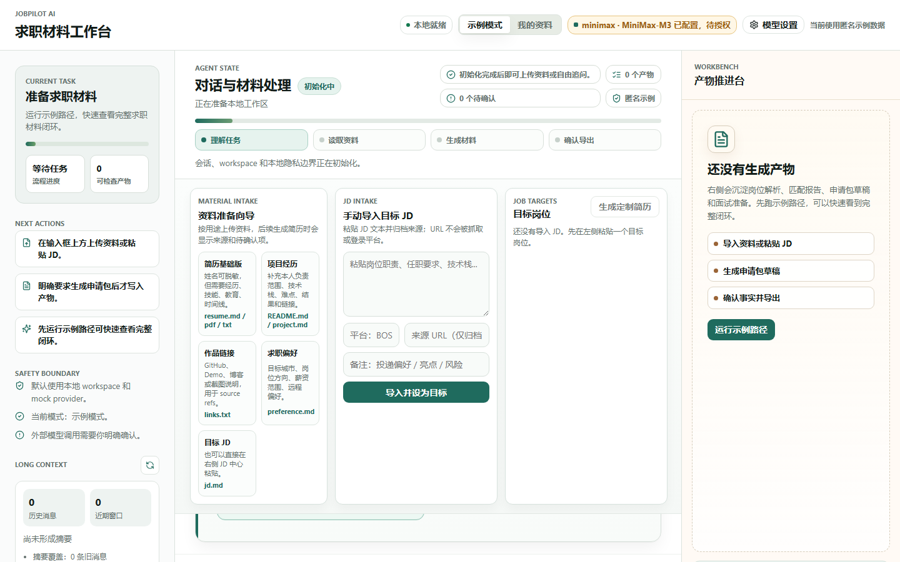
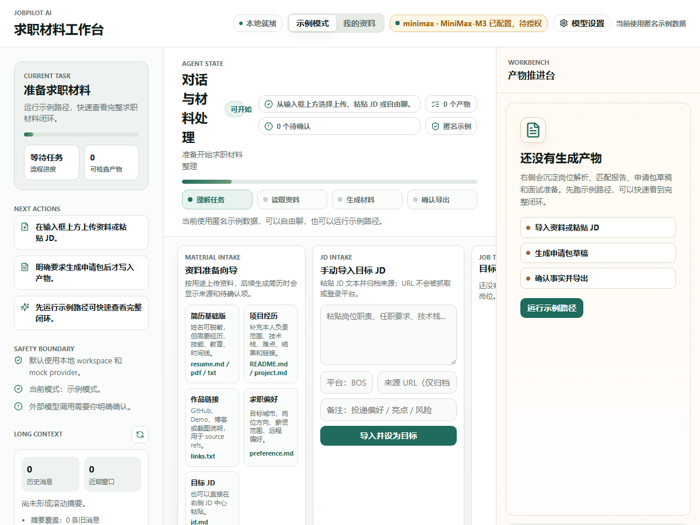
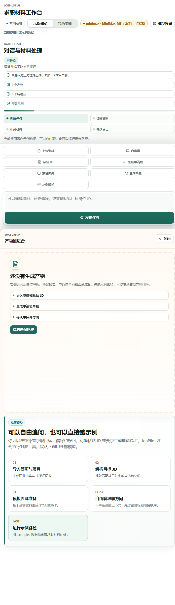
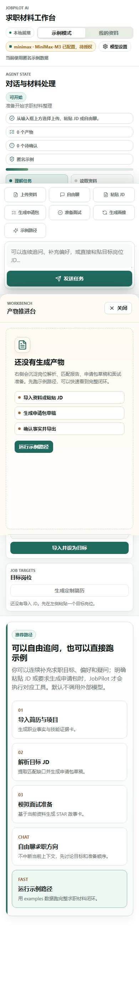
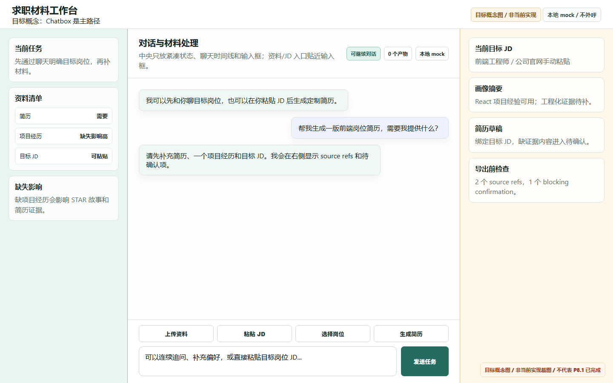
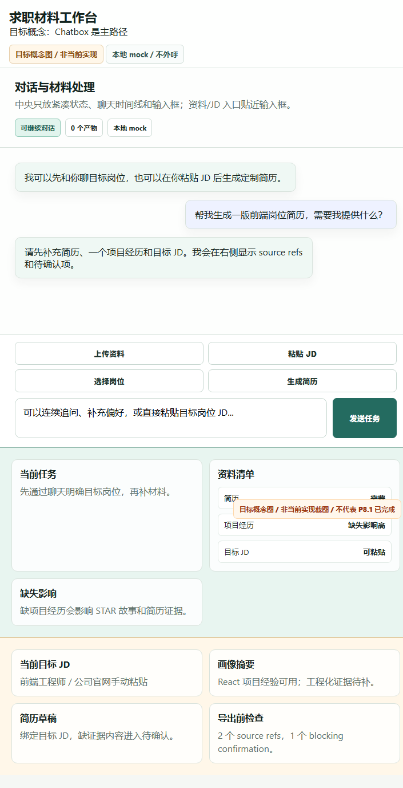
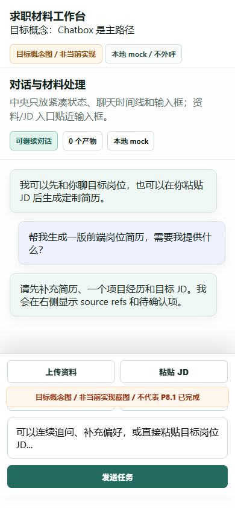

目标架构
- Current baseline: actual running Chatbox UI from Vite/FastAPI.
- Target concept: deterministic HTML/SVG mock, explicitly marked as not implemented.
当前实现
- apps/chatbox/src/main.tsx renders p8-workflow-strip before timeline.
- P8.1 implementation is not yet complete.
自动化步骤
| # | 步骤 | 动作 | 结果 |
|---|---|---|---|
| 1 | 打开当前 Chatbox 1440 | goto | passed |
| 2 | 等待当前页面标题 1440 | waitText | passed |
| 3 | 当前真实基线 1440 | screenshot | passed |
| 4 | 打开当前 Chatbox 1200 | goto | passed |
| 5 | 等待当前页面标题 1200 | waitText | passed |
| 6 | 当前真实基线 1200 | screenshot | passed |
| 7 | 打开当前 Chatbox 720 | goto | passed |
| 8 | 等待当前页面标题 720 | waitText | passed |
| 9 | 当前真实基线 720 | screenshot | passed |
| 10 | 打开当前 Chatbox 390 | goto | passed |
| 11 | 等待当前页面标题 390 | waitText | passed |
| 12 | 当前真实基线 390 | screenshot | passed |
| 13 | 打开目标概念 1440 | goto | passed |
| 14 | 等待目标概念 1440 | waitText | passed |
| 15 | 目标概念 1440 | screenshot | passed |
| 16 | 打开目标概念 720 | goto | passed |
| 17 | 等待目标概念 720 | waitText | passed |
| 18 | 目标概念 720 | screenshot | passed |
| 19 | 打开目标概念 390 | goto | passed |
| 20 | 等待目标概念 390 | waitText | passed |
| 21 | 目标概念 390 | screenshot | passed |
验收标准
- Baseline screenshots come from the real running UI.
- Target concept screenshots are visibly watermarked as non-implementation concept images.
- Report distinguishes evidence, concept, and unverified scope.
命令结果
| 命令 | 状态 | 证据 |
|---|---|---|
| Scenario did not define command results. | ||
PRD 规格检视
| PRD / Gate 要求 | 证据 | 结论 |
|---|---|---|
| Scenario did not define PRD review items. | ||
代码检视
| 区域 | 结论 | 级别 |
|---|---|---|
| Scenario did not define code review items. | ||
文档审计
| 区域 | 结论 | 状态 |
|---|---|---|
| Scenario did not define documentation audit items. | ||
多背景多轮对话补证
Scenario did not define multi-turn dialogue evidence.
截图证据

baseline_current_1440.png
baseline_current_1200.png
baseline_current_720.png
baseline_current_390.png
target_chatbox_first_1440.png
target_chatbox_first_720.png
target_chatbox_first_390.png未验证范围与审计意见
- No unverified scope declared.